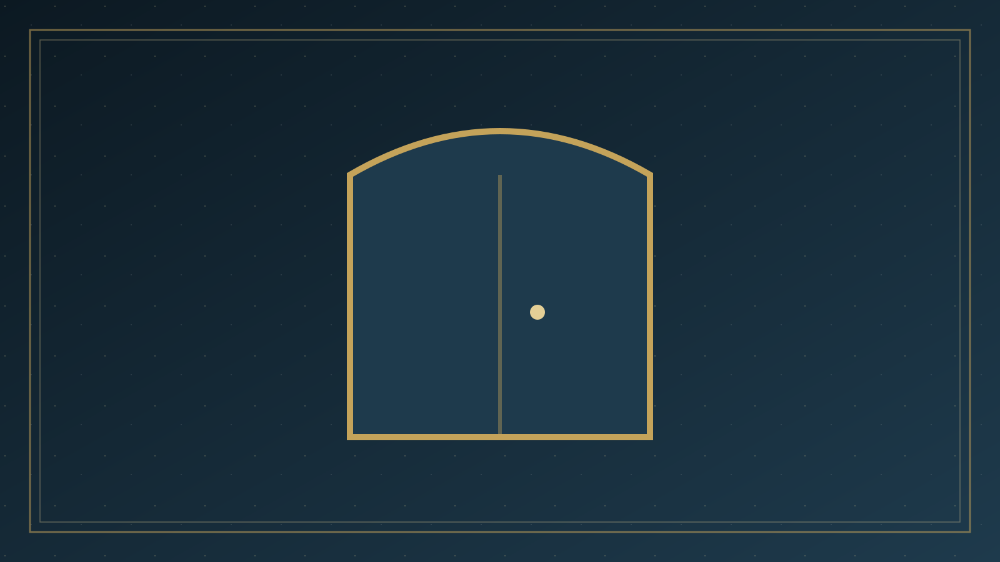

分題 04 / 06
第四律：必須接受
我們必須親自接受耶穌基督作救主和生命的主，這樣我們才能知道並經驗神的愛和神為我們生命的計劃
我們必須接受基督
約翰福音 1:12
「凡接待祂的，就是信祂名的人，祂就賜他們權柄，作神的兒女。」
我們藉著信心接受基督
以弗所書 2:8,9
「你們得救是本乎恩，也因著信，這並不是出於自己乃是神所賜的，也不是出於行為，免得有人自誇。」
我們必須親自邀請基督進入心中
啟示錄 3:20
耶穌說：「看哪，我站在門外叩門，若有聽見我聲音就開門的，我要進到他那裡去。」
接受基督包括從自我轉向神，相信基督進入我們的生命，赦免我們的罪，使我們成為神所喜悅的人。人只在理智上同意關於基督的真理，或只有一些情感的經驗都是不夠的。
這兩個圓圈代表兩種生命：
自我管理的生命
我 - 自我在寶座
十 - 基督在生命以外
• - 人生的各項活動
在自我管理之下，時常產生各種混亂和不安
基督管理的生命
十 - 基督在生命的寶座上
我 - 自我退下寶座
• - 人生的各項活動
在基督管理之下，結果就合乎神的計劃
那一個圓圈代表你現在的生命？
你願意那一個圓圈代表你的生命？
你現在就可以藉著禱告接受基督
（禱告就是和神交談）
神知道你的心，祂看重你內心的態度，過於你的言語，下面的禱告可做參考：
「神啊，我需要你。我願意打開心門接受耶穌作我的救主和生命的主。感謝你赦免我的罪，求你管理我的一生，使我成為你所喜悅的人。奉主耶穌的名禱告，阿們。」
這個禱告是否合乎你的心願？
如果是，請你現在就作相同的禱告，基督就會照著祂的應許進入你的生命。